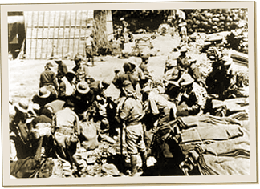

|
j
a v a s c r i p t |
April 11, 1942
All fighting in Bataan has ceased, according to allied radio reports. MacArthur said: "Never in the history of the world has an army done so much with so little." The Tribune headlines merely said: "Mariveles Taken; Many Captured." Trying to rob Bataan of its glory, the Japanese reported the "annihilation offensive" had been postponed until April 3: ...that action be delayed temporarily to effective bottling up of the enemy on the peninsula with a minimum of troops, to facilitate the prosecution of the war on other fronts; namely, Malaya, Burma, and the Dutch East Indies.

Shedding valuables before the long march
Maurice and I have lookouts posted practically on every road leading into Manila, plus truck drivers tasked to watch for signs of prisoners. Ma is looking worse — not complaining, but not eating either. |
|
|
|
|